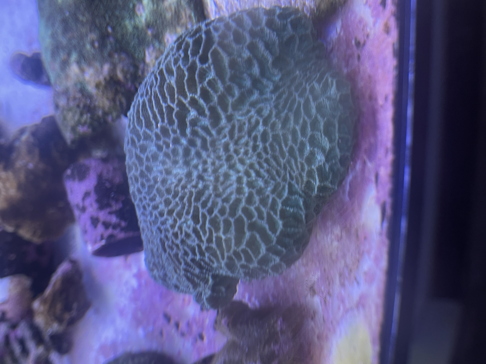
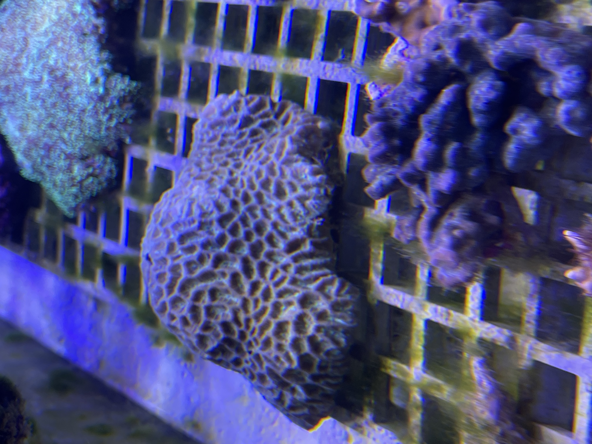

形态特征
棘星珊瑚属群体呈褐黄色或浅灰色，珊瑚杯个体形状与大小各异，隔片边缘有3～8个尖齿，末端两个较大且朝上。珊瑚骨骼呈圆形或有角状，隔膜壁由厚渐薄，齿部锋利；息肉夜间伸展幅度大，触手具捕食功能，颜色丰富。
棘星珊瑚属（学名：Acanthastrea）是褶叶珊瑚科下的一属。


棘星珊瑚属群体呈褐黄色或浅灰色，珊瑚杯个体形状与大小各异，隔片边缘有3～8个尖齿，末端两个较大且朝上。珊瑚骨骼呈圆形或有角状，隔膜壁由厚渐薄，齿部锋利；息肉夜间伸展幅度大，触手具捕食功能，颜色丰富。
棘星珊瑚属生活于珊瑚礁海域水深1米以下区域，分布于中国南海、红海及太平洋多个群岛海域。生存水温25℃±3℃，海水pH值8.2±0.2，硬度8±3DH。
棘星珊瑚属作为造礁珊瑚，为珊瑚礁的结构提供重要贡献。